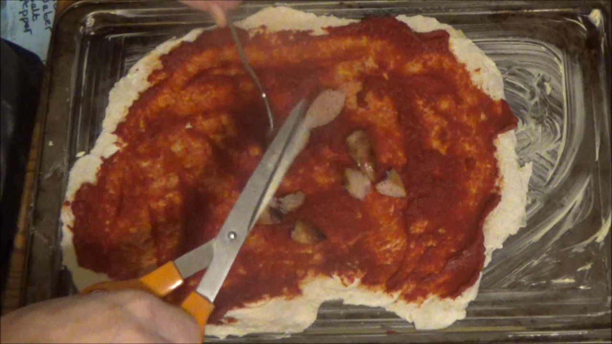

Spaghetti Bolognese Kay Style

Have left Over meat from yesterday's roast? It's Pizza time!
A great way to use up leftovers! Lamb? Pork? Beef? Doesn't matter! Just make sure to add even more meat ontop of it
Ingredients:
For the dough:
- 2ounces of water
- 1tsp sugar
- 1tsp salt
- 1tsp dry yeast
- 1tsp black pepper
- 1tbsp oil
- 500g bread flour
Toppings:
- leftover roast meat
- 2 cooked cumberland sausage
- 1 tube of tomato puree
- 1 pack of sandwich ham
Steps:
- mix together dough ingredients.
- when dough is formed. Roll it out flat to desired thickness.
- coat with tomato puree until it's evenly spread across the pizza.
- cut up sausages into slices and place on top.
- shred roast meat and sadwich ham and place on top.
- cook on high for 30mins.
- enjoy!